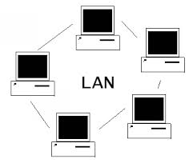
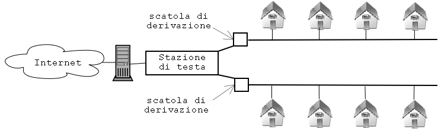
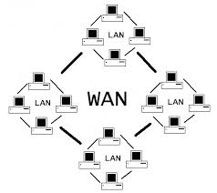

| LAN |
 |
(local area network) e una rete di piccole dimensioni normalmente copre una stanza o piccoli edifici. |
1)è una rete semplice 2 e facililmente estensioni.E adatta per piccole aree |
2)ha una sicurezza limitata |
| CAN |
 |
una can è famosa è una rete più grande e compressa di una lan copre nolmarmente più posti vicini e è composta da sotto reti lan
è piu sicura di una lan
consente la condivisione di risorse anziendali senza accesso a internet |
1) è normalmente costosa |
2) è normalmente più complessa da gestire |
| MAN |
 |
è una rete che copre parti di una città.
è normalmente composta sottorete da can
è una rete sicura |
1)è una rete complicata e costosa |
2) non è sempre impossibile realizzarla |
| WAN |
 |
è una rete che copre parti regioni della terra consente |
1) consente di realizzare una rete parallera internet
2) rete sicura ha dei costi elevatissimi è una rete comunicazioni da realizzare e da gestire
| WLAN |
 |
E una rete che si basa di componenti |
1) è una rete semplice da realizzare e semplice è una retwe molto sicura
2)è la rete più semplice da realizzare le prestazioni offerte sono molto buone